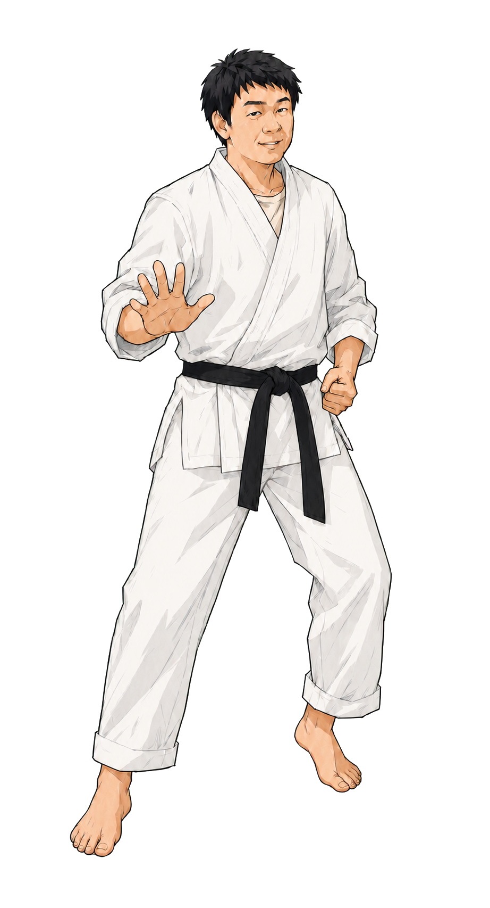
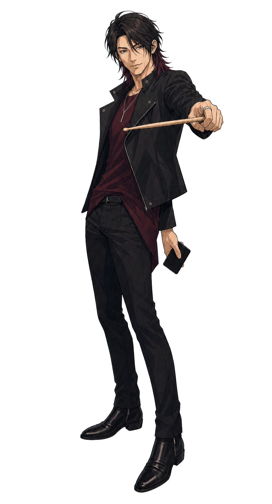
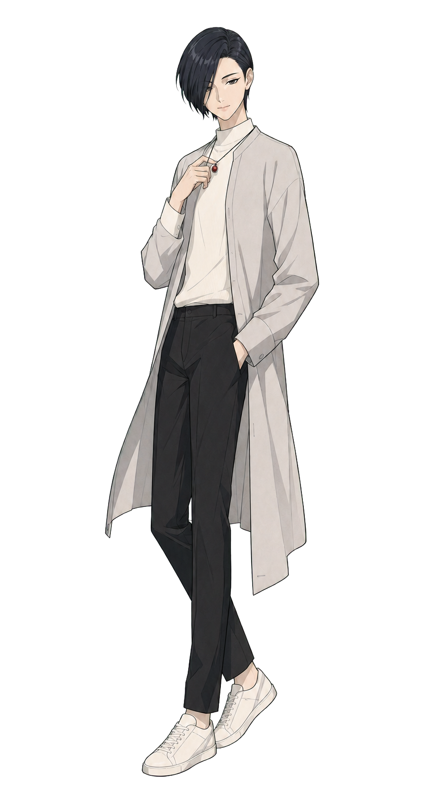
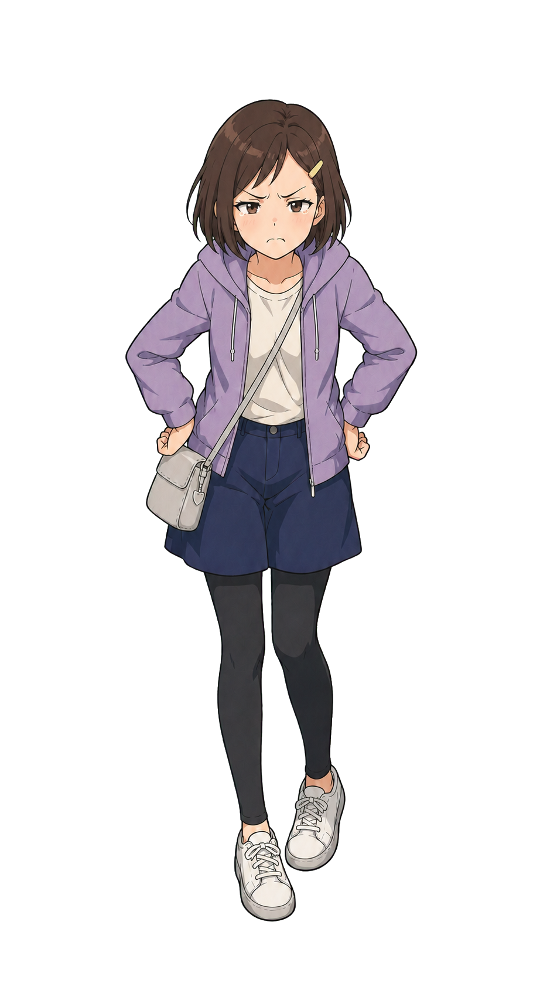
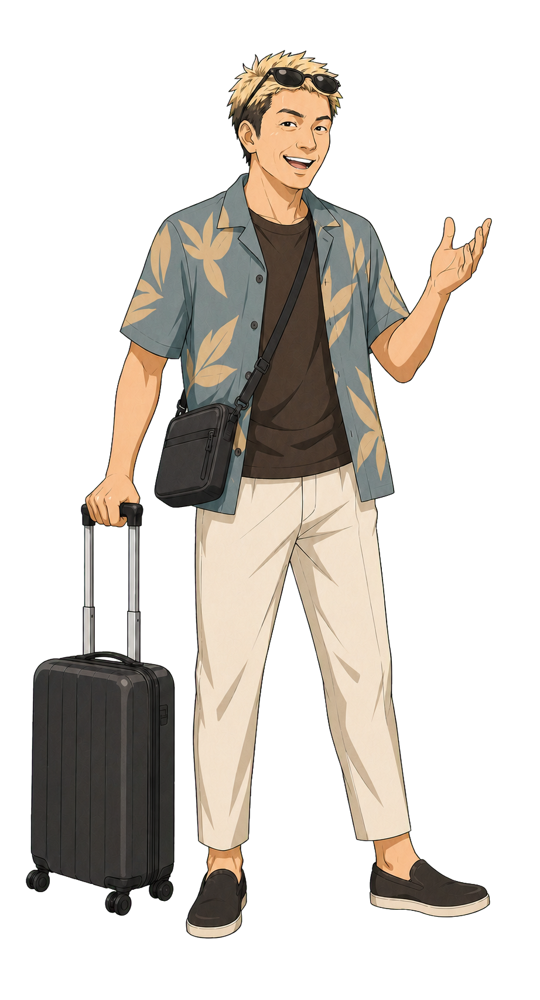
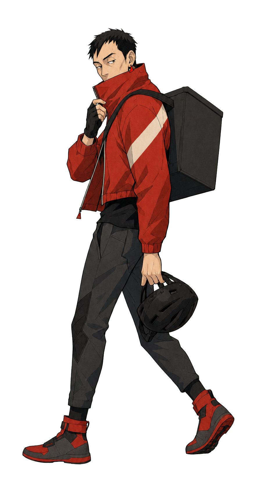
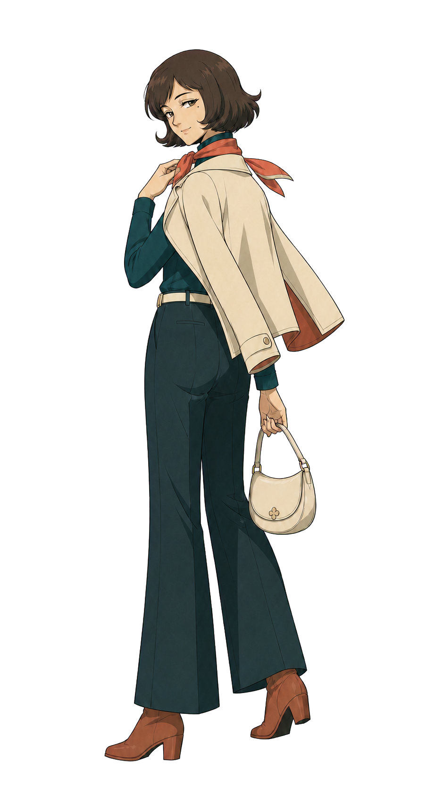

ごっさん
DISCORD MINISTER本作の主人公にして語り手。スローライフを求めて「てきとうに」に入ったSEが、気づけば大型連盟Ajeの幹部としてDiscord運営を担うまでになっていた。自虐的なユーモアと誠実な調整力で、本部と支部の橋渡し役として奮走する。

レイ
ACE & STRATEGIST連盟最大戦力を誇る男。ドラム歴10年以上のリズム感と同種のリーダーシップで、シーズン1の作戦指揮を事実上牽引した。ごっさんが「友達と呼べる存在」と記すほどの関係を築いた盟友でもある。

びしゅ
GUILD MASTERAje本部の盟主。個人戦力で鯖内20位以内に入りながら、統率・外交・知力のいずれにも穴がないミスターパーフェクト。ごっさんが「信頼できる人物だと直感した」と記すほど、相談を預けられる存在として機能した。

ルー子
RIVAL & OFFICERAje本部の幹部で、ごっさんと火力・プレイスタイルがほぼ同等のライバル。感情表現が豊かで直情的な性格を持ち、シーズン1の最終局面ではごっさんと同時に降伏宣言を行うほどの連携を見せた。

三和
TOP 10 PLAYER鯖内でも有名な個人戦力10位以内のプレイヤー。一度はプレッシャーで幹部を離れた過去を持ちながら、シーズン1では再び幹部志願して指揮の中核を担った。三和が動揺したとき、ごっさんが「なんてこった」と感じたほど、その存在感は大きい。

デリ
FOUNDING MEMBER「てきとうに」から続く連盟最古参の一人。Aze支部の柱として仲間から頼りにされた高火力プレイヤーで、理由を告げることなくひっそりと去った。その脱退はレイを「なぜ相談してくれなかった」と狼狽させ、ごっさんにも深く刻まれた。

花りり
HEALER OF THE SQUADAze支部の古参幹部で、連盟内の癒し担当。ごっさんが「絶対実物かわいい」と記したほどの存在感を持ちながら、ある日ひっそりと姿を消した。その脱退はごっさんに言いしれぬ不安感を残した。